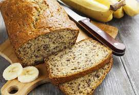

Banana Bread

Bananas And Flour
Simply the perfect banana bread recipe. Moist, quick and easy to make with a soft tender crump. Very scrumptious indeed, and a clever way to rid of very ripe bananas. You can also use your own ingenuity to tweak here and there to come up with your own super ingredients.
Ingredients
- 3 ripe or slightly overripe bananas
- 2 eggs
- 240g cake flour
- 200g sugar(You can use natural sweeteners in place of sugar)
- 150g butter
- 2 teaspoons baking powder
- Pinch of salt
Steps
- Use a hand mixer to beat the bananas. A couple lumpy bits will make the bread even tastier!
- Mix in the sugar, butter and eggs
- In a separate bowl, combine the flour, baking powder and a pinch of salt
- Slowly add the dry ingredients to the wet ones while mixing at a gentle speed
- Pour the batter into a loaf form
- Bake at 180 degrees celsius for 45-55 mins
Your dinner is served!